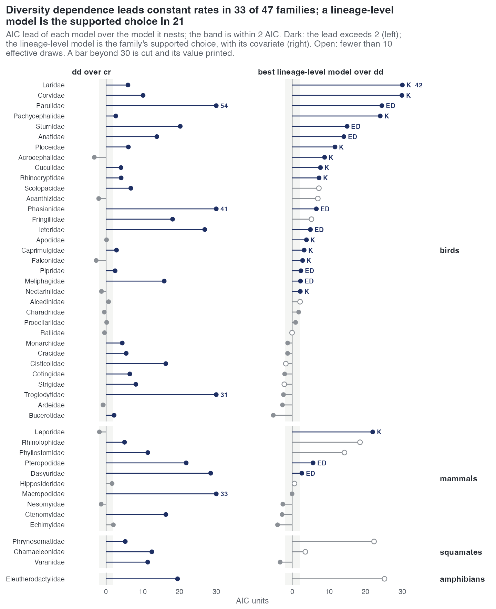
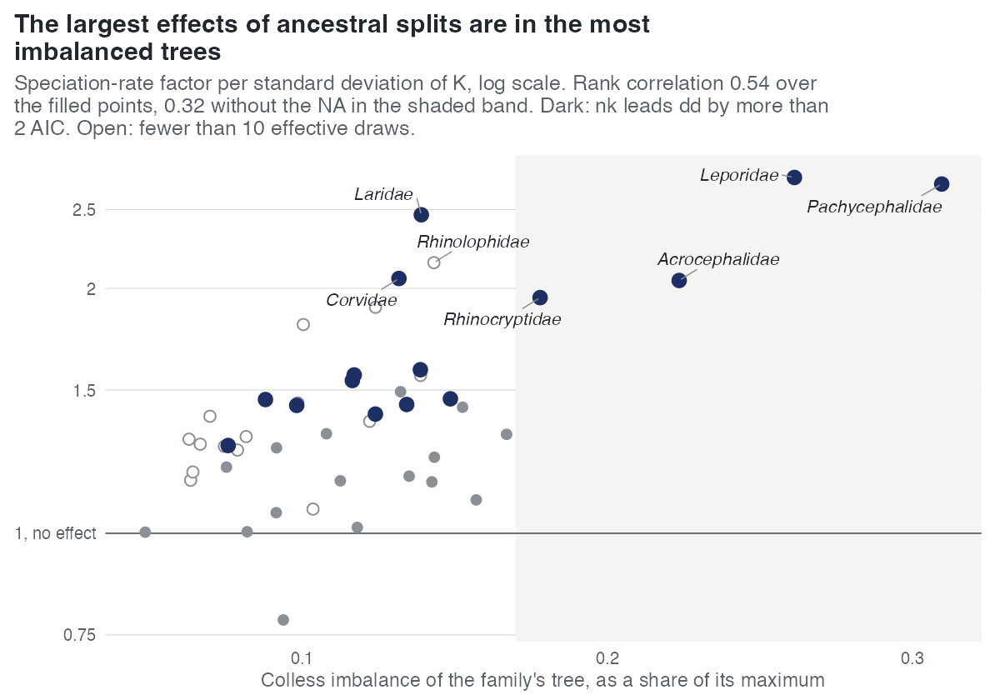

E26 — forty-seven families under the whole workflow
| Status | complete; for the 29 families inside the calibrated range superseded by E28; the table of record is the merged one, results/E26merged/ |
| Package build | 3e596dd (the lineage-table cap) |
| Driver / analysis | sim/E25-real.R --box auto, sim/E26-analysis.R, figures sim/figures-families.R |
| Data | results/E26/families.csv (47 rows), fits.csv, paths.csv; merged table results/E26merged/families.csv (47 rows); report/e26-numbers.tex, report/e26-table.tex |
Question
E25 ran the ladder and the path on three bird families. The biology paper's closing analysis needs every family-level tree the study's size range covers: per family the chosen model, its margin and the coefficients, and across families the distribution of signs and effects.
Design
Trees. Every Condamine et al. (2019) family tree in the phylo-species-atlas with 50 to 200 tips and \(\rho \ge 0.5\) (sim/data/atlas-candidates.csv): 47 families, 33 bird, 10 mammal, 3 squamate (Chamaeleonidae, Phrynosomatidae, Varanidae), 1 amphibian (Eleutherodactylidae).
| quantity | range | median |
|---|---|---|
| tips | 50-194 | 88 |
| crown age (Ma) | 11.2-101.4 | 34.7 |
| \(\rho\) | 0.651-1.000 | 0.918 |
Tip edges extended to one present where the depths spread by at most 15% of the crown age (E5's rule); a tree beyond it "is reported and not fitted".
Fits.
| setting | value |
|---|---|
| ladder | estimate_rates(model = "all"), exponential link, each family's \(\rho\): cr → dd → {nd, ned, nk} |
| box | auto_bounds() |
| draws | 300 |
| iterations | 100 |
| clock | 30 min per fit (E23's setting at 100 tips) |
| path | covariate_path() over \(N\), \(D\), ED, \(K\) on the observed tree and on 3000 surrogate draws at the ladder's dd estimate |
Definitions (sim/E26-analysis.R): the winner is the lowest AIC; a family's verdict is "lineage-level" when the winner is nd, ned or nk and leads dd by more than 2, "diversity- dependent" when dd wins by more than 2, "constant rate" likewise for cr, otherwise "undecided"; a family is usable when its winner's fit has an effective sample of at least 10. Coefficients are given as \(\exp(\hat\beta_X\cdot\mathrm{sd}_X)\), the speciation-rate factor per standard deviation of the covariate over the family's tips.
Pre-set rule
None: a comparative description read against the floors of E21-E24. A family whose chosen fit has an effective sample below 10 is reported and left out of every across-family statement. The design of E27, registered after E26 ran, adds that the count of supported families is restated beside the false-positive rate of the nearest E27 cell, and that no family is added or removed on E27's account.
Results
Two tables carry E26. The run itself (README row, results/E26/families.csv) and the merged table the biology paper reads (results/E26merged/: E28's rows for the 29 families at \(\rho \ge 0.9\), E26's for the 18 below, marked †).
| quantity | E26 run (47) | merged table (47) |
|---|---|---|
| usable (winner ESS ≥ 10) | 37 | 37 |
dd leads cr by > 2 |
32 | 33 |
| lineage-level model supported, of the usable | 18 (nk 11, ned 7) |
21 (nk 12, ned 9) |
dd / cr / undecided, of the usable |
not recorded | 11 / 0 / 5 |
\(\beta_K > 0\), nk fits with ESS ≥ 10 |
31 of 33 | 30 of 31 (median factor 1.40 per sd, 0.78-2.74) |
\(\beta_{ED} < 0\), ned fits with ESS ≥ 10 |
32 of 33 | 30 of 32 (median factor 0.68, 0.33-1.08) |
\(\beta_D < 0\), nd fits with ESS ≥ 10 |
not recorded | 19 of 25 (median factor 0.86) |
| lineage-level fits meeting the stopping rule | 19 of 141 | 24 of 141 |
Further readings from the merged table (report/e26-numbers.tex):
- Sampler-limited (winner ESS < 10): Acanthizidae, Alcedinidae, Chamaeleonidae, Eleutherodactylidae, Fringillidae, Hipposideridae, Phrynosomatidae, Phyllostomidae, Rhinolophidae, Scolopacidae. Four of them have large lineage-level leads that enter no count (Eleutherodactylidae
nk25.1 at ESS 2.6, Phrynosomatidaenk22.3 at 5.5, Rhinolophidaenk18.5 at 4.4, Phyllostomidaened14.2 at 1.1). - In the E26 run the
nkfamilies have Pybus-Harvey \(\gamma\) from -0.9 to -4.0 and thenedfamilies from -4.6 to -7.7. In the merged table \(\gamma < -1.645\) on 38 of 47, and the rank correlation of \(\gamma\) with thedd-over-crlead is -0.89. - Where both
nkandnedfits keep 10 draws,nkhas the lower AIC in 19 of 25 (median lead 3.6). - Rank correlation of Colless imbalance with the log K factor over usable
nkfits: 0.54 (p = 0.002); 0.32 among the 27 below normalised Colless 0.17. - Fitted turnover at the crown below 0.05 in 41 of 47.
- The path on the observed tree keeps at least one lineage-level covariate in 38 of 47; it keeps ED in all 9
ned-chosen families and K in 4 of the 12nk-chosen ones. - Nearest E27 null cell for the 21 supported families: 7 at 50 tips (a lineage-level model chosen on 1 of 20 null trees), 5 at the families' median (1 of 20), 5 at 100 tips (2 of 20), 4 at 200 tips (2 of 20); none of the 21 at \(\rho \le 0.835\).
- Wall-clock per family: median 2.5 h (0.5-4.2).

dd over cr (left) and of the best lineage-level model over dd (right), merged table; dark: lead above 2, open: fewer than 10 effective draws. 21 families have a supported lineage-level model, K in 12 and ED in 9; none is a pendant-age model.
Conclusion
No rule. On the merged table a lineage-level model is the supported choice in 21 of the 37 usable families, K in 12 and ED in 9; K raises speciation in 30 of 31 readable nk fits and ED lowers it in 30 of 32 ned fits. What it does not show: the coefficients come from fits of which 19 (E26) or 24 (merged) of 141 met the stopping rule, and E27's cells put the fitted K coefficient at 0.65-0.76 of its generating value on fits stopped at 100 iterations, so the factors are read as attenuated. The extinction side is not read (41 of 47 at fitted turnover below 0.05). The signs and counts describe what the ladder chooses on these trees; E39 later found that on unbalanced real trees K and ED share much of their ranking (ED-K median -0.44), which bears on how far a K choice and an ED choice are distinct statements.
Recorded inconsistencies: the README's E26 row still carries the run's own counts (18, nk 11, ned 7), while e26-numbers.tex and the biology paper read the merged ones (21, 12, 9). Macropodidae (tip spread 19%) was fitted and appears in the merged table (dd, lead over cr 32.6), although the design says a tree beyond 15% is reported and not fitted; read_family in sim/E26-analysis.R has no refusal. report/report.tex calls the set "47 bird families"; the candidate file has 33 bird, 10 mammal, 3 squamate and 1 amphibian.
Related
- E25 — the same workflow on three of these families.
- E27 — the ladder at the families' sizes, turnovers and sampling fractions; the calibration E26 is read against.
- E28 — the 29 families inside the calibrated range, refitted as the analysis of record.
- E39 — what the covariates share on these 47 trees.
- E40 — the same workflow on birds and mammals cut into clade-sized trees.